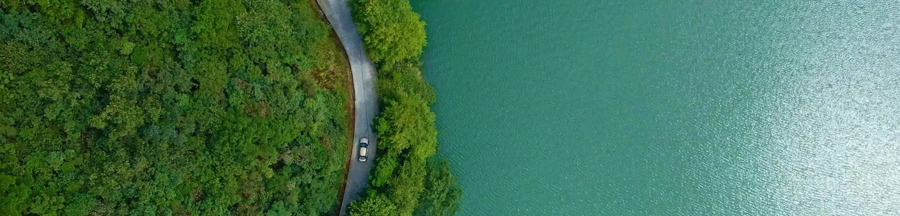
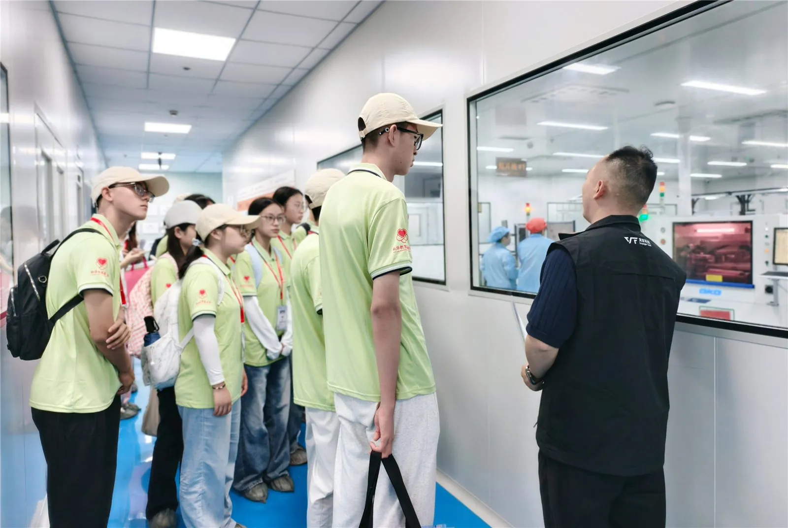
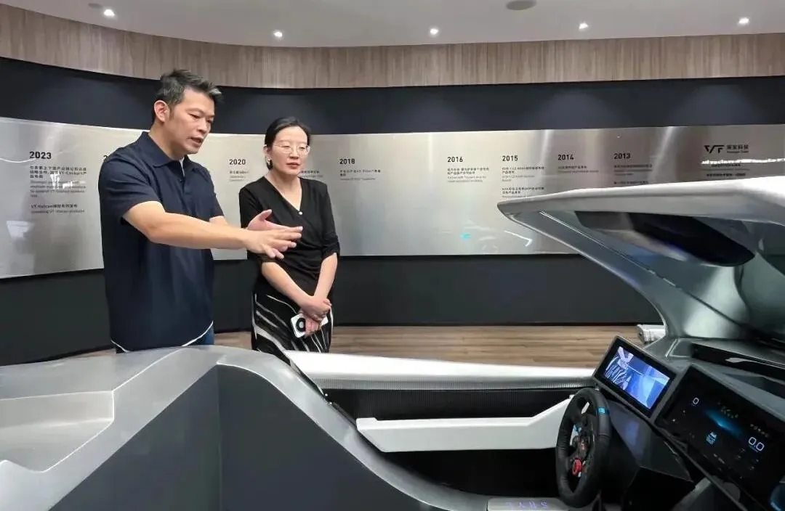
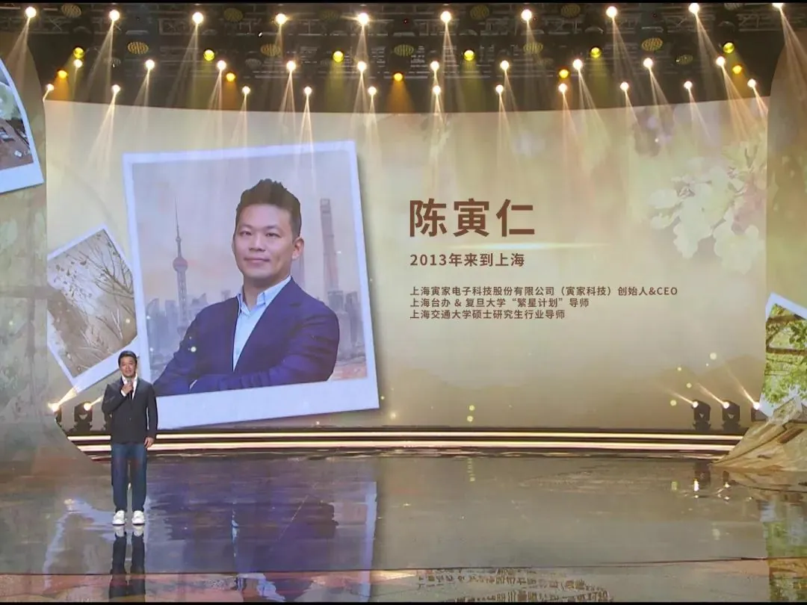
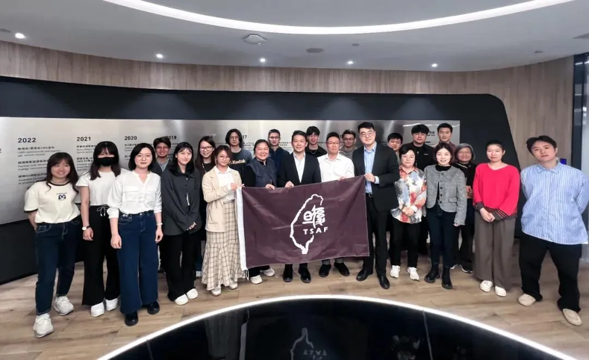
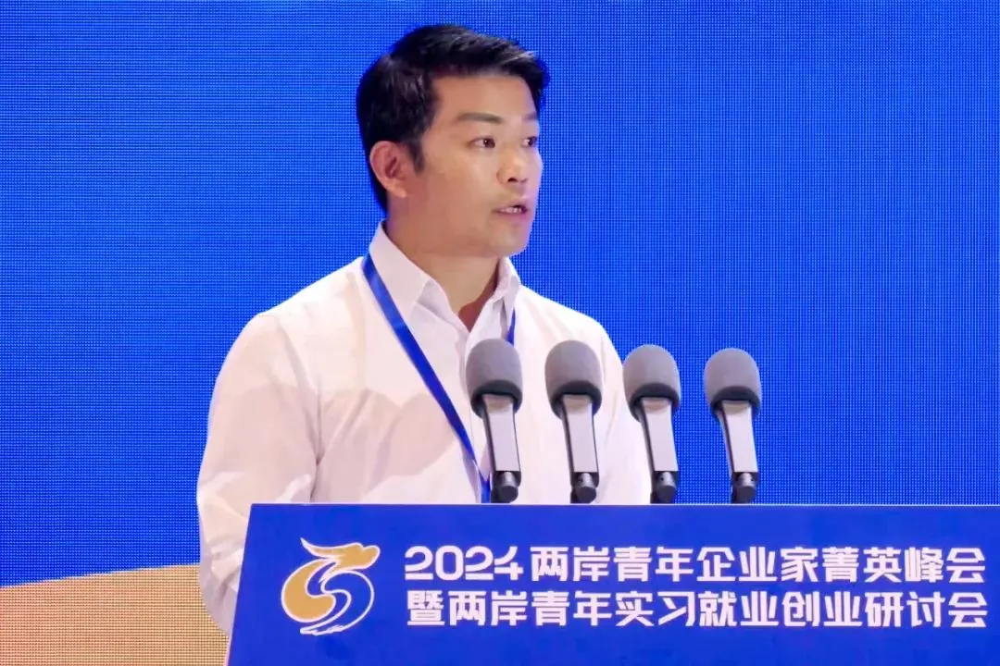
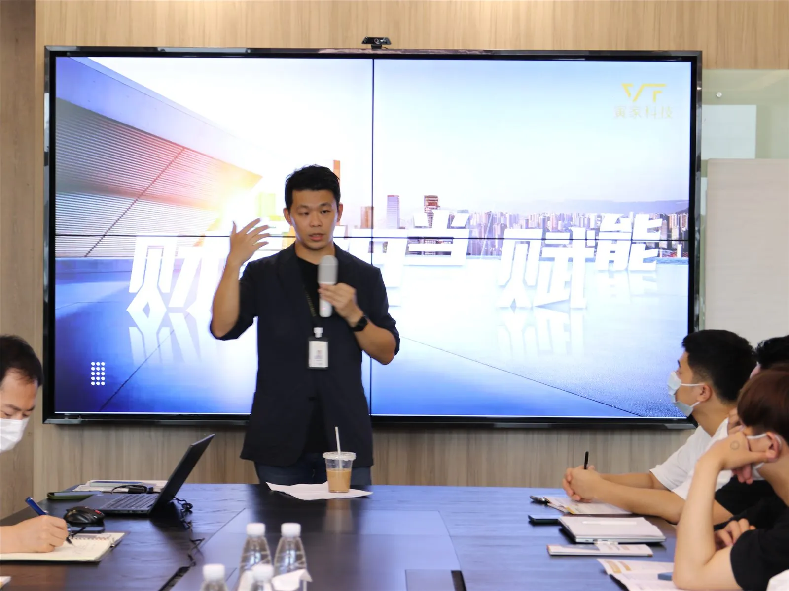
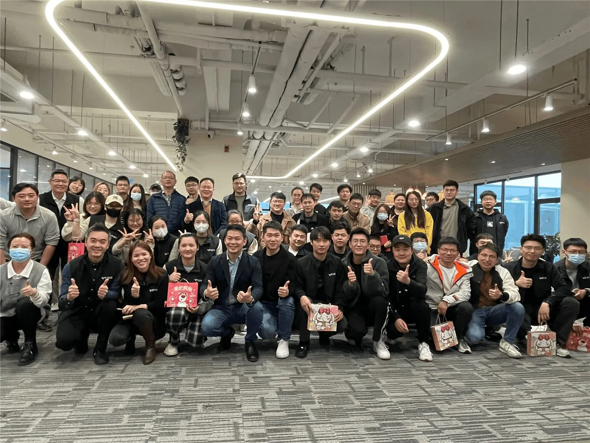
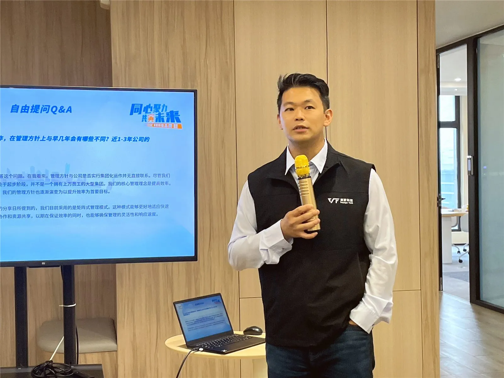

Environmental, Social and Governance · 環境 社會 企業治理
寅家科技高度重視履行環境、社會和治理維度的責任，
將 ESG 理念滲透至管理決策及日常經營中，由董事會負責決策並領導企業環境、社會和治理戰略，執行 ESG 政策和實踐。
寅家科技努力推動環境保護，在日常營運、辦公及生產環境責任等多方面取得進展，致力於環保經營、提倡無紙化辦公，並符合 ISO14001、ISO45001 認證。
順勢而為，做兩岸經濟/文化深度融合的橋樑，助力兩岸青年創新創業就業；篤行社會公益善舉，關注青少年科技思維培養，相信科技讓世界更美好。
致力維持高水準的企業管治，倡導「全員參與，共治共享」理念，堅持透明管理，引領行業向更加和諧與高效的方向邁進。

我們對廢棄物實施分類收集和規範處置，委託具備資質的第三方機構處理，並建立危險廢棄物台賬以確保管理可追溯。
我們持續推進資源高效利用，將節能要求融入日常運營管理，推行綠色辦公與無紙化辦公，落實隨手關燈、夏季空調溫度不低於26℃等節能措施，有效降低資源消耗。
我們積極響應國家「雙碳」戰略，將碳管理納入運營管控體系，依託可再生能源應用夯實低碳運營基礎，助力綠色可持續發展。

由浙江省新華愛心教育基金會發起的「捡回珍珠計劃」在寅家科技平湖製造基地展開。來自青海、甘肃、廣西、河南、新疆等地的30多名「珍珠生」展開研學活動，零距離體驗科創魅力。

國台辦經濟局宗文副局長一行蓉臨寅家科技開展工作調研，通過實地考察、技術演示與座談交流，深入了解寅家科技的創新成果及兩岸產業協同發展實踐。

2025海峡兩岸青年匯活動在上海正式舉辦，寅家科技創始人兼CEO陳寅仁作為特邀企業家嘉賓出席活動，向現場600多名兩岸青年分享寅家科技的創業成長經歷。

在上海市台協浦東工委會組織下，以復旦大學為主的20餘名台灣青年學子走進寅家科技，開啟以「科技探索+職業成長」為核心的深度參訪活動。此次活動中，寅家科技啟動「智聯沪台·2025台青實習直通車計劃」，為台青學子搭建在大陸職場發展的快車道。

2023年「普陀育菁計劃」——兩岸青年企業實踐訓練營正式開營。上海市台辦副主任陽禮華，普陀區人民政府副區長王珺等領導出席，各主辦單位、支持單位負責人、實習企業負責人、訓練營導師和營員們共約70人參加。寅家科技作為今年嚴格甄選入圍的兩岸青年企業實踐基地之一，受邀出席開營儀式。


